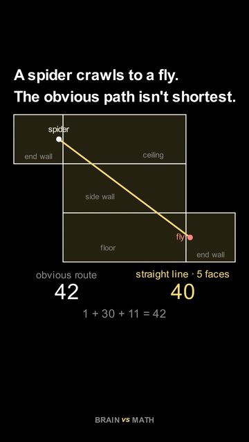

The spider and the fly: what is the shortest path?
A room is 30 long, 12 wide and 12 high. A spider sits on one end wall, on the centre line, 1 below the ceiling. A fly sits on the opposite end wall, on the centre line, 1 above the floor. The spider can only walk on the walls, ceiling and floor. What is the shortest way to the fly?
| Unfolding | Straight path |
|---|
The room stays 12 wide and 12 high. Watch which of the four unfoldings gives the shortest path as the room gets longer.
The answer for a room 30 long: 40
The obvious route goes up 1 to the ceiling, straight across 30, and down 11: 42. Going round a side wall instead is longer, about 43.17.
Now unfold the room so that the end wall, the ceiling, a side wall, the floor and the other end wall lie flat in a chain. On that flat sheet the spider and the fly are 32 apart one way and 24 apart the other, so the straight line between them is the long side of a 24-32-40 right triangle: 40. Fold the walls back up and that line becomes a path that crosses five of the six faces, shorter than the obvious one.
This is a classic puzzle by Henry Dudeney. The trick works for any path on the surface of a box: on a flat unfolding the shortest route is a straight line, as long as that line stays on the unfolded walls, so the question becomes which unfolding brings the two points closest.
Why a longer room changes the answer
Move the room length above. Of these four unfoldings, the path over the ceiling is shortest while the room is shorter than 19.4. Between 19.4 and 24.2 the route over the ceiling and one side wall wins, and beyond 24.2 the five-face route wins. In a short room the detour across the walls costs more than it saves.
Watch it in under a minute

The video plays from YouTube when you press play, and not before.
Subscribe to Brain vs Math on YouTube
More visual proofs, one idea at a time.
Frequently asked questions
Why is the straight line on the unfolded room the shortest path?
Folding and unfolding the walls does not stretch them, so a path keeps its length on the flat sheet. On a flat sheet the shortest way between two points is a straight line.
Does the spider really cross five faces?
Yes: its own end wall, the ceiling, a side wall, the floor and the far end wall. Only the other side wall is left out.
Is 40 the shortest of all paths, or only of these four?
For this room, 40 is the shortest path of all; it is the known answer to Dudeney's puzzle. The table compares four unfoldings, and for other room lengths it shows only which of those four is shortest.